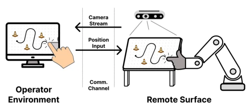
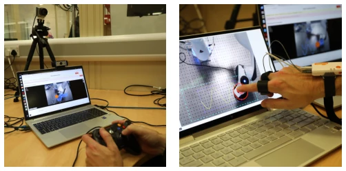
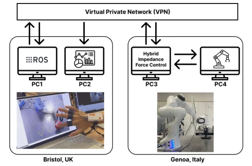
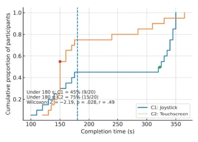
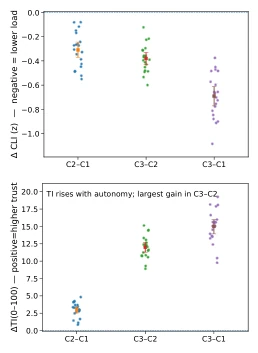
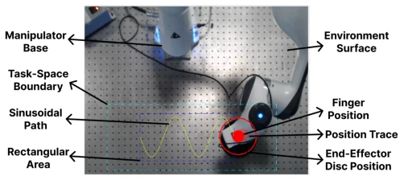

This paper attempts to address the pain points of robotic arm teleoperation surface contact tasks (such as wiping sampling) in the nuclear industry using touchscreens. Traditional joysticks are indeed challenging in force control and path tracking. The authors developed a "point-to-target" touchscreen solution, combined with hybrid impedance control, enabling the robot to automatically maintain normal force. The results were quite promising: completion time was halved, cognitive load decreased, and coverage increased. However, one should not rush to acclaim; trust was slightly lower than with joysticks, likely because novices have not yet adapted to touchscreens, given that joysticks are the industrial standard. Moreover, the sample size was only 20 people with just one familiarization session; how steep is this learning curve really? Physiological signals were measured in detail (GSR, thermal imaging), but no force feedback was mentioned; relying purely on vision for "blind operation" of surface contact, would one not feel panicked without tactile feedback in a radiation zone? Additionally, although the "one-click auto" mode had the lowest load, real-world tasks are rarely completely static; does this count as equivocation? In summary, touchscreens are a promising direction, but they still fall short of "industrial-grade reliability," particularly as the trust aspect has not fully convinced stakeholders.
In maintenance within high-risk environments such as nuclear facilities, surface contact tasks (such as wiping sampling) require extremely high path accuracy and normal force control [1], [2]. Existing teleoperation interfaces mostly rely on joysticks; operators must map joystick angles to end-effector velocity, and it is difficult to maintain constant force, leading to force oscillations or surface detachment [4]. Although touchscreen devices are widespread, existing research is mostly used for free-space positioning, waypoint planning, or supervisory control, lacking direct mapping schemes targeting stable surface contact and normal force control [5], [6]. Some studies involve shared control, but have not verified the performance of touchscreens in contact-rich tasks under real remote constraints [10], [11]. Additionally, cognitive load and trust assessments mostly rely on subjective questionnaires, lacking multimodal physiological signal fusion [20], [21]. This study aims to fill the gap of touchscreens in contact teleoperation, reducing operational burden through intuitive mapping combined with force control.

Fig. 1: Illustration of the touchscreen teleoperation interface
The overall architecture is divided into three parts: input conversion, hybrid control, and remote communication. First, touchscreen pixel coordinates are converted via PPM and mapped to physical world coordinates, restricted within the operational space to prevent sudden changes. The core innovation lies in the hybrid impedance-admittance control architecture: tangential (x-y) uses Cartesian impedance for position tracking, while normal (z) uses an admittance loop to convert force error into motion reference, decoupling the impact of network latency on force control. The controller automatically switches to "surface locking" mode upon detecting contact (normal force exceeds threshold), using torque to adjust end-effector attitude to align with the surface normal. Additionally, the system dynamically adjusts force control parameters through adaptive stiffness estimation (RANSAC regression) to adapt to different surface hardness levels. The communication layer uses a VPN connection between the UK operation station and the Italian robot end, ensuring end-to-end latency below 100ms. Physiological signal collection (GSR, thermal imaging, blinking) is synchronized with task data, used to calculate Cognitive Load Index (CLI) and Trust Index (TI). This design decouples intuitive human-machine interaction from underlying force control, enabling operators to focus only on tangential motion while the system automatically maintains normal force.

Fig. 3: Two manual control conditions tested by participants.

Fig. 4: Overview of the communication framework
实验Experiments
研究招募20名参与者，在Franka Emika Panda机械臂上模拟核工业擦拭任务。对比三种模式：传统摇杆（C1）、触屏界面（C2）、单点击自动模式（C3）。任务包括矩形区域填充与正弦路径跟踪。评测指标涵盖任务完成时间、覆盖率、超调量，以及NASA-TLX、生理信号（GSR、眨眼、体温）衍生的CLI与TI。结果显示，触屏组（C2）中位完成时间较摇杆组（C1）减少53.5%（2.50 vs 5.38分钟），正弦路径覆盖率提升至90.7%。认知负荷显著降低（TLX均值从52降至43）。自动模式（C3）负荷最低，但信任度略高于触屏。值得注意的是，触屏虽提升效率，但信任指数略低于摇杆，可能源于对新交互模式的适应期。生理数据与主观问卷趋势一致，验证了触屏在降低认知负荷方面的有效性，但样本量小且缺乏长期训练数据，限制了结论的普适性。
The study recruited 20 participants to simulate nuclear industry wiping tasks on a Franka Emika Panda robotic arm. Three modes were compared: traditional joystick (C1), touchscreen interface (C2), and single-click auto mode (C3). Tasks included rectangular area filling and sine path tracking. Evaluation metrics covered task completion time, coverage, overshoot, as well as CLI and TI derived from NASA-TLX and physiological signals (GSR, blinking, body temperature). Results showed that the median completion time for the touchscreen group (C2) decreased by 53.5% compared to the joystick group (C1) (2.50 vs 5.38 minutes), and sine path coverage increased to 90.7%. Cognitive load decreased significantly (mean TLX dropped from 52 to 43). The auto mode (C3) had the lowest load, but trust was slightly higher than touchscreen. Notably, although touchscreens improved efficiency, the trust index was slightly lower than joysticks, possibly originating from the adaptation period for new interaction modes. Physiological data trends were consistent with subjective questionnaires, validating the effectiveness of touchscreens in reducing cognitive load, but the small sample size and lack of long-term training data limit the generalizability of the conclusions.

Fig. 5: Completion-time ECDF by interface. The touchscreen (C2) shifts the distribution left relative to the joystick (C1); the dashed line marks 180 s. Proportion under 180 s: C1 = 45% (9/20), C2 = 75% (15/20).

Fig. 6: Paired estimation across conditions. Top: Cognitive- Load Index (CLI) differences, where negative values indicate lower load. Bottom: Trust Index (TI) differences, where positive values indicate higher trust. Squares mark mean differences with bootstrap 95% CIs; dots are participants.
其他图片Other Figures

Fig. 2: Interface display captured during trial execution